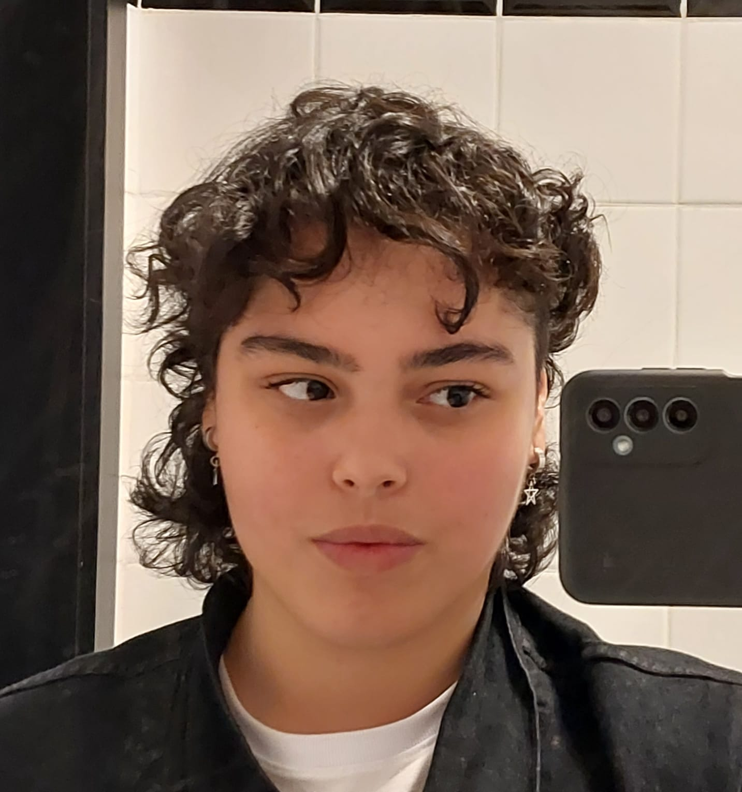

Dados Pessoais
Telefone: (15) 98160-5571
E-mail: larissaalmeidalima@gmail.com
Endereço: Alameda Reino Unido, 370 - Sorocaba, SP
Experiência Profissional
Desenvolvedor Full Stack - First Santander
Período: Janeiro 2023 - Presente
Responsabilidades:
- Desenvolvimento de aplicativos web utilizando tecnologias como HTML, CSS, JavaScript, Node.js e React.
- Integração de APIs de terceiros.
- Manutenção e melhoria de sistemas existentes.
Estagiário em Desenvolvimento Web - Santander
Período: Julho 2021 - Dezembro 2023
Responsabilidades:
- Auxílio no desenvolvimento de interfaces de usuário utilizando HTML, CSS e JavaScript.
- Participação em reuniões de equipe para discussão de projetos.
Matrix SWOT, GUT, SIPOC +
- Testes de funcionalidades e resolução de bugs.
Educação
Análise e Desenvolvimento de Sistemas - Universidade de Sorocaba: FACENS
Conclusão em Dezembro de 2024
Habilidades
Linguagens de Programação: JavaScript, Python, Java
Tecnologias Web: HTML, CSS, React, Node.js
Banco de Dados: MySQL, MongoDB